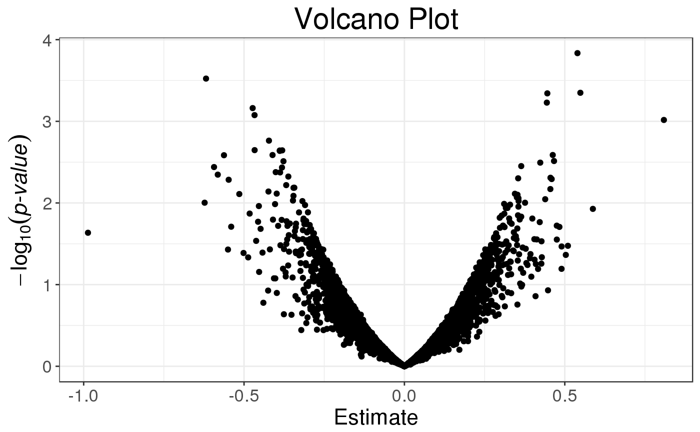
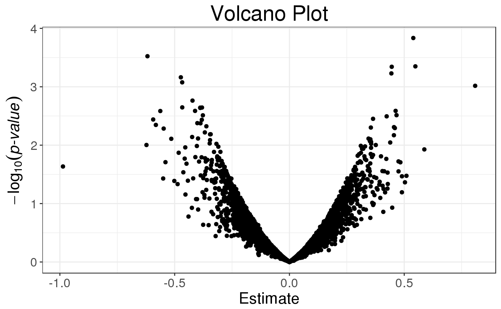

Slopes of column-wise logistic regressions of each column of a Filebacked Big Matrix, with some other associated statistics. Covariates can be added to correct for confounders.
big_univLogReg(
X,
y01.train,
ind.train = rows_along(X),
ind.col = cols_along(X),
covar.train = NULL,
tol = 1e-08,
maxiter = 20,
ncores = 1
)Arguments
- X
An object of class FBM.
- y01.train
Vector of responses, corresponding to
ind.train. Must be only 0s and 1s.- ind.train
An optional vector of the row indices that are used, for the training part. If not specified, all rows are used. Don't use negative indices.
- ind.col
An optional vector of the column indices that are used. If not specified, all columns are used. Don't use negative indices.
- covar.train
Matrix of covariables to be added in each model to correct for confounders (e.g. the scores of PCA), corresponding to
ind.train. Default isNULLand corresponds to only adding an intercept to each model. You can usecovar_from_df()to convert from a data frame.- tol
Relative tolerance to assess convergence of the coefficient. Default is
1e-8.- maxiter
Maximum number of iterations before giving up. Default is
20. Usually, convergence is reached within 3 or 4 iterations. If there is not convergence, glm is used instead for the corresponding column.- ncores
Number of cores used. Default doesn't use parallelism. You may use nb_cores.
Value
A data.frame with 4 elements:
the slopes of each regression,
the standard errors of each slope,
the number of iteration for each slope. If is
NA, this means that the algorithm didn't converge, and glm was used instead.the z-scores associated with each slope. This is also an object of class
mhtest. Seemethods(class = "mhtest").
Details
If convergence is not reached by the main algorithm for some columns,
the corresponding niter element is set to NA and a message is given.
Then, glm is used instead for the corresponding column.
If it can't converge either, all corresponding estimations are set to NA.
See also
Examples
set.seed(1)
X <- big_attachExtdata()
n <- nrow(X)
y01 <- sample(0:1, size = n, replace = TRUE)
covar <- matrix(rnorm(n * 3), n)
X1 <- X[, 1] # only first column of the Filebacked Big Matrix
# Without covar
test <- big_univLogReg(X, y01)
## new class `mhtest`
class(test)
#> [1] "mhtest" "data.frame"
attr(test, "transfo")
#> function (x) .Primitive("abs")
attr(test, "predict")
#> function(xtr) {
#> lpval <- stats::pnorm(xtr, lower.tail = FALSE, log.p = TRUE)
#> (log(2) + lpval) / log(10)
#> }
#> <environment: base>
## plot results
plot(test)
 plot(test, type = "Volcano")

## To get p-values associated with the test
test$p.value <- predict(test, log10 = FALSE)
str(test)
#> Classes 'mhtest' and 'data.frame': 4542 obs. of 5 variables:
#> $ estim : num -0.04317 0.00839 -0.06761 0.22375 -0.06625 ...
#> $ std.err: num 0.13 0.155 0.141 0.16 0.123 ...
#> $ niter : int 3 3 3 4 3 3 3 3 3 4 ...
#> $ score : num -0.3324 0.0542 -0.4812 1.401 -0.5405 ...
#> $ p.value: num 0.74 0.957 0.63 0.161 0.589 ...
#> - attr(*, "transfo")=function (x)
#> - attr(*, "predict")=function (xtr)
#> ..- attr(*, "srcref")= 'srcref' int 105 15 108 3 15 3 3869 3872
#> .. ..- attr(*, "srcfile")=Classes 'srcfilealias', 'srcfile' <environment: 0x00000000144a9130>
summary(glm(y01 ~ X1, family = "binomial"))$coefficients[2, ]
#> Estimate Std. Error z value Pr(>|z|)
#> -0.0431720 0.1298854 -0.3323854 0.7395983
# With all data
str(big_univLogReg(X, y01, covar.train = covar))
#> Classes 'mhtest' and 'data.frame': 4542 obs. of 4 variables:
#> $ estim : num -0.01899 0.00312 -0.07282 0.21818 -0.07458 ...
#> $ std.err: num 0.132 0.156 0.142 0.162 0.123 ...
#> $ niter : int 3 3 4 4 4 3 4 3 3 4 ...
#> $ score : num -0.144 0.02 -0.513 1.35 -0.605 ...
#> - attr(*, "transfo")=function (x)
#> - attr(*, "predict")=function (xtr)
#> ..- attr(*, "srcref")= 'srcref' int 105 15 108 3 15 3 3869 3872
#> .. ..- attr(*, "srcfile")=Classes 'srcfilealias', 'srcfile' <environment: 0x00000000144a9130>
summary(glm(y01 ~ X1 + covar, family = "binomial"))$coefficients[2, ]
#> Estimate Std. Error z value Pr(>|z|)
#> -0.01898835 0.13210843 -0.14373310 0.88571124
# With only half of the data
ind.train <- sort(sample(n, n/2))
str(big_univLogReg(X, y01[ind.train],
covar.train = covar[ind.train, ],
ind.train = ind.train))
#> Classes 'mhtest' and 'data.frame': 4542 obs. of 4 variables:
#> $ estim : num -0.1311 0.2373 0.0139 0.2585 0.0569 ...
#> $ std.err: num 0.189 0.229 0.197 0.229 0.173 ...
#> $ niter : int 4 4 3 4 4 4 4 3 4 4 ...
#> $ score : num -0.6953 1.0379 0.0707 1.1269 0.3293 ...
#> - attr(*, "transfo")=function (x)
#> - attr(*, "predict")=function (xtr)
#> ..- attr(*, "srcref")= 'srcref' int 105 15 108 3 15 3 3869 3872
#> .. ..- attr(*, "srcfile")=Classes 'srcfilealias', 'srcfile' <environment: 0x00000000144a9130>
summary(glm(y01 ~ X1 + covar, family = "binomial",
subset = ind.train))$coefficients[2, ]
#> Estimate Std. Error z value Pr(>|z|)
#> -0.1311374 0.1886059 -0.6952985 0.4868683
plot(test, type = "Volcano")

## To get p-values associated with the test
test$p.value <- predict(test, log10 = FALSE)
str(test)
#> Classes 'mhtest' and 'data.frame': 4542 obs. of 5 variables:
#> $ estim : num -0.04317 0.00839 -0.06761 0.22375 -0.06625 ...
#> $ std.err: num 0.13 0.155 0.141 0.16 0.123 ...
#> $ niter : int 3 3 3 4 3 3 3 3 3 4 ...
#> $ score : num -0.3324 0.0542 -0.4812 1.401 -0.5405 ...
#> $ p.value: num 0.74 0.957 0.63 0.161 0.589 ...
#> - attr(*, "transfo")=function (x)
#> - attr(*, "predict")=function (xtr)
#> ..- attr(*, "srcref")= 'srcref' int 105 15 108 3 15 3 3869 3872
#> .. ..- attr(*, "srcfile")=Classes 'srcfilealias', 'srcfile' <environment: 0x00000000144a9130>
summary(glm(y01 ~ X1, family = "binomial"))$coefficients[2, ]
#> Estimate Std. Error z value Pr(>|z|)
#> -0.0431720 0.1298854 -0.3323854 0.7395983
# With all data
str(big_univLogReg(X, y01, covar.train = covar))
#> Classes 'mhtest' and 'data.frame': 4542 obs. of 4 variables:
#> $ estim : num -0.01899 0.00312 -0.07282 0.21818 -0.07458 ...
#> $ std.err: num 0.132 0.156 0.142 0.162 0.123 ...
#> $ niter : int 3 3 4 4 4 3 4 3 3 4 ...
#> $ score : num -0.144 0.02 -0.513 1.35 -0.605 ...
#> - attr(*, "transfo")=function (x)
#> - attr(*, "predict")=function (xtr)
#> ..- attr(*, "srcref")= 'srcref' int 105 15 108 3 15 3 3869 3872
#> .. ..- attr(*, "srcfile")=Classes 'srcfilealias', 'srcfile' <environment: 0x00000000144a9130>
summary(glm(y01 ~ X1 + covar, family = "binomial"))$coefficients[2, ]
#> Estimate Std. Error z value Pr(>|z|)
#> -0.01898835 0.13210843 -0.14373310 0.88571124
# With only half of the data
ind.train <- sort(sample(n, n/2))
str(big_univLogReg(X, y01[ind.train],
covar.train = covar[ind.train, ],
ind.train = ind.train))
#> Classes 'mhtest' and 'data.frame': 4542 obs. of 4 variables:
#> $ estim : num -0.1311 0.2373 0.0139 0.2585 0.0569 ...
#> $ std.err: num 0.189 0.229 0.197 0.229 0.173 ...
#> $ niter : int 4 4 3 4 4 4 4 3 4 4 ...
#> $ score : num -0.6953 1.0379 0.0707 1.1269 0.3293 ...
#> - attr(*, "transfo")=function (x)
#> - attr(*, "predict")=function (xtr)
#> ..- attr(*, "srcref")= 'srcref' int 105 15 108 3 15 3 3869 3872
#> .. ..- attr(*, "srcfile")=Classes 'srcfilealias', 'srcfile' <environment: 0x00000000144a9130>
summary(glm(y01 ~ X1 + covar, family = "binomial",
subset = ind.train))$coefficients[2, ]
#> Estimate Std. Error z value Pr(>|z|)
#> -0.1311374 0.1886059 -0.6952985 0.4868683